Vault 4 · Old Testament · Isaiah 1–66 Outline and Notes
Visual Aids: Charts, Timelines & Maps
Eighteen visual aids for the study of Isaiah — timelines, comparison charts and maps, each keyed to the chapter it illustrates. Download the full set as a PDF to read or print, or as an editable PowerPoint to teach from.
PDF · 18 pages · 0.6 MB | PowerPoint · 18 slides · 0.6 MB · speaker notes give each chart’s placement and sources
The charts follow the order of the book, so a leader can teach straight through the deck alongside the notes. Each chart links to the chapter it illustrates; select an image to open it full size. The charts draw on Pastor William K. Lyons’s outline and notes; the two Messiah charts and the New Testament columns add cross-references, and the speaker notes name every source. Several charts connect to the Prophecy visual aids.
Overview & Introduction
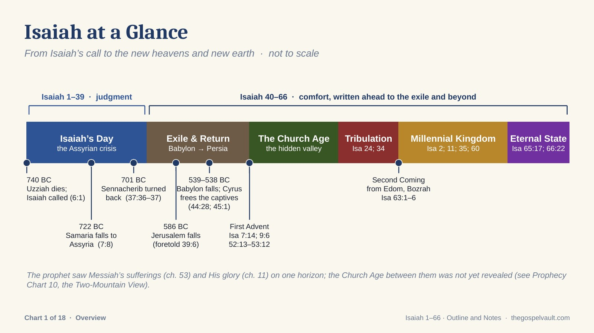
Isaiah at a Glance
From Isaiah’s call to the new heavens and new earth: the ministry dates, the exile and return, and the prophetic bands.
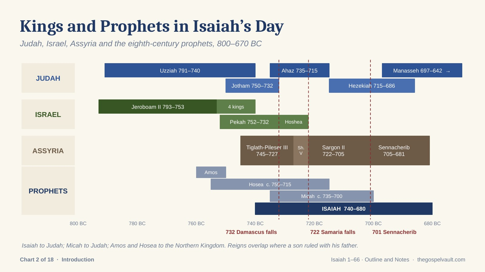
Kings and Prophets in Isaiah’s Day
Judah, Israel, Assyria and the eighth-century prophets on one time line, 800–670 BC.
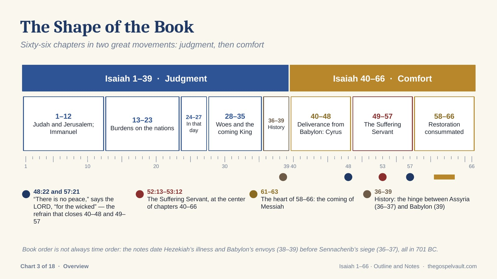
The Shape of the Book
Judgment (1–39) and comfort (40–66), with the three groups of nine chapters and the Suffering Servant at the center.
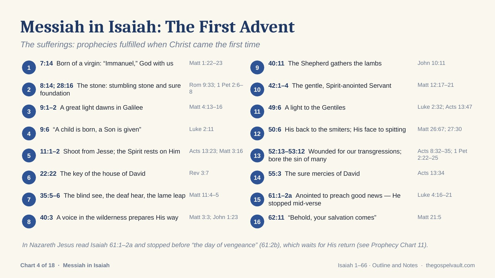
Messiah in Isaiah: The First Advent
Sixteen prophecies of the sufferings, each with its New Testament fulfillment.
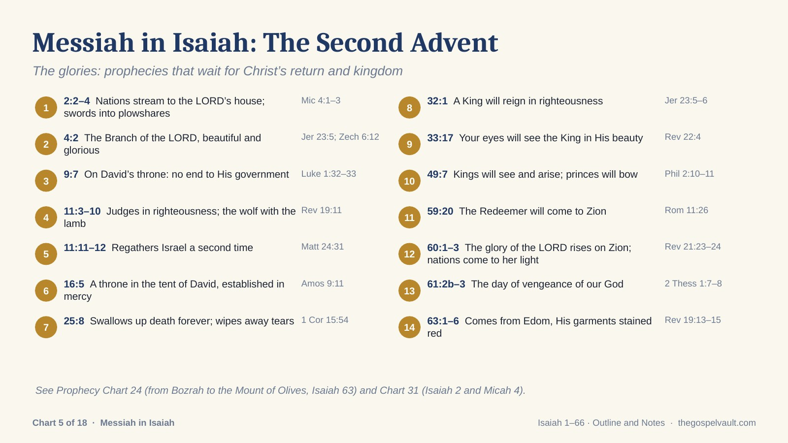
Messiah in Isaiah: The Second Advent
Fourteen prophecies of the glories that wait for Christ’s return and kingdom.
Isaiah 1–12
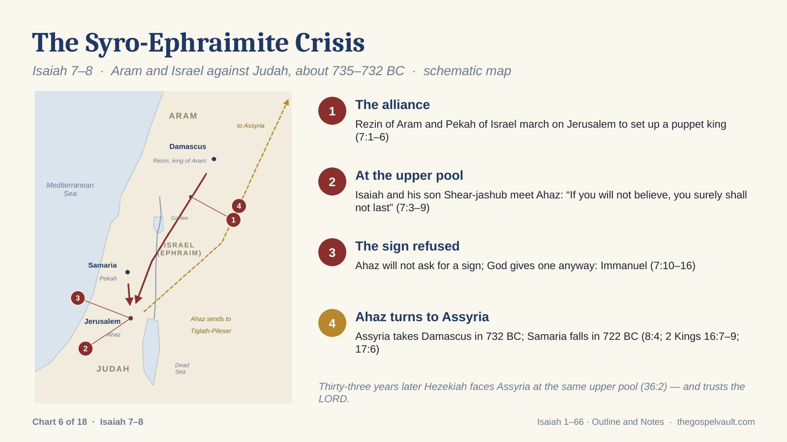
The Syro-Ephraimite Crisis
Aram and Israel against Judah; Isaiah meets Ahaz at the upper pool; Ahaz turns to Assyria.
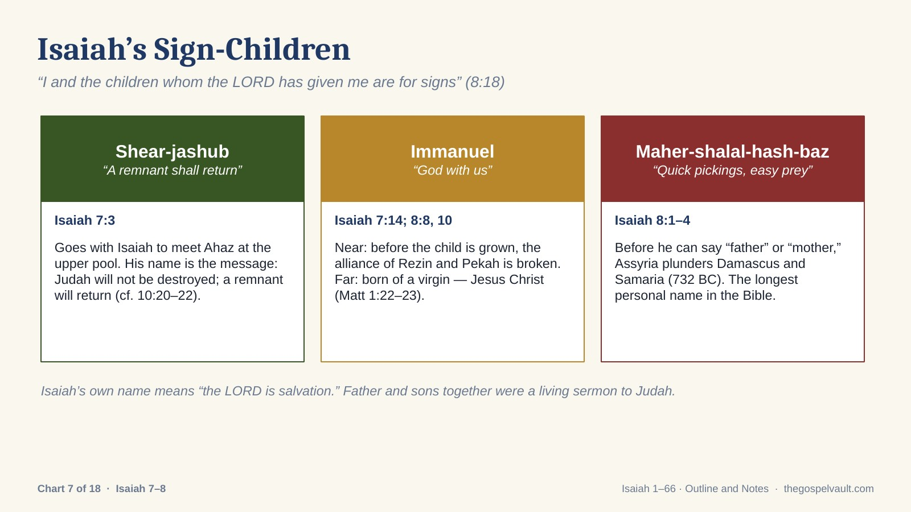
Isaiah’s Sign-Children
Shear-jashub, Immanuel and Maher-shalal-hash-baz — names that preached.
Isaiah 13–27
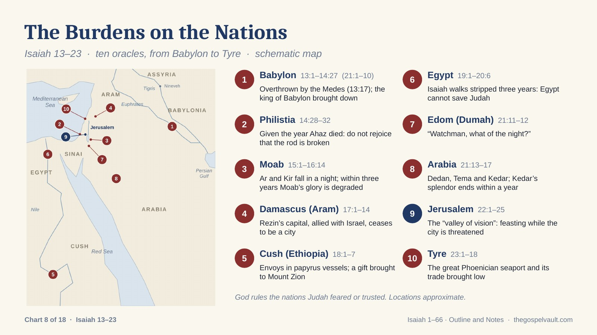
The Burdens on the Nations
The ten oracles of Isaiah 13–23 on a schematic map, from Babylon to Tyre.
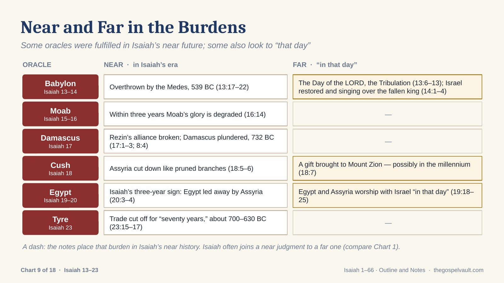
Near and Far in the Burdens
Which oracles were fulfilled in Isaiah’s era, and which also look to “that day.”
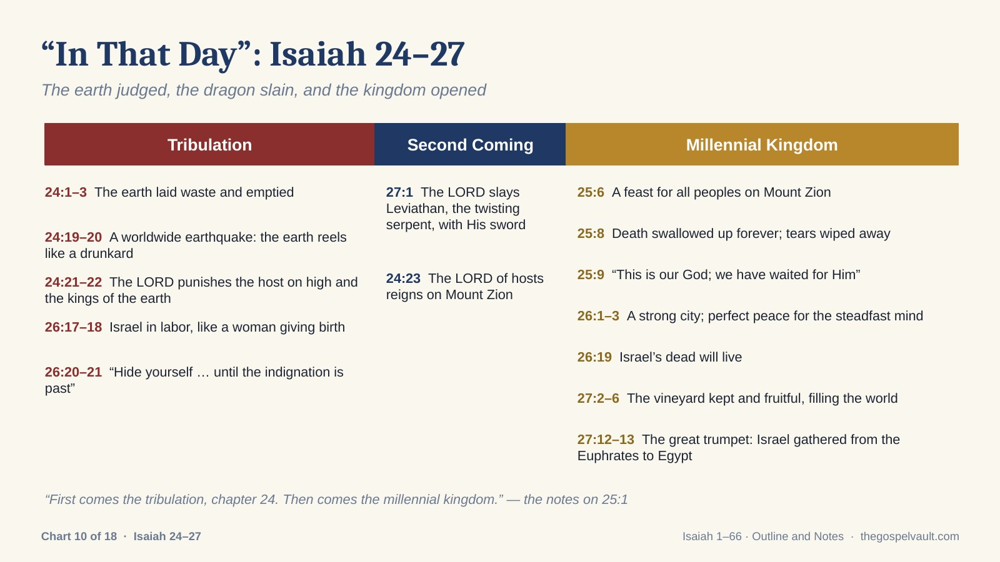
“In That Day”: Isaiah 24–27
The Tribulation, the Second Coming and the Millennial Kingdom in Isaiah’s “little apocalypse.”
Isaiah 28–39
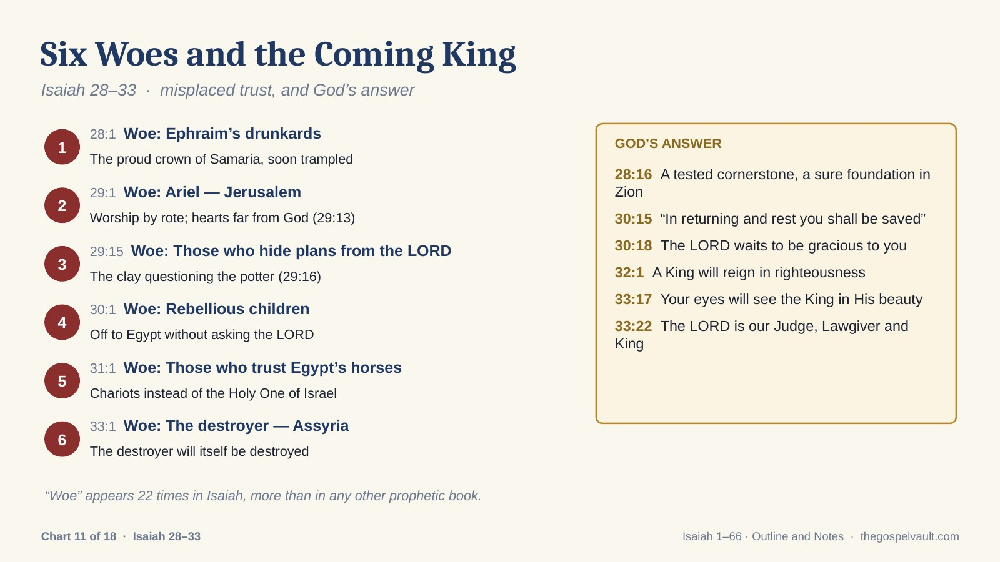
Six Woes and the Coming King
The woes of Isaiah 28–33 and God’s answer: the cornerstone and the King.
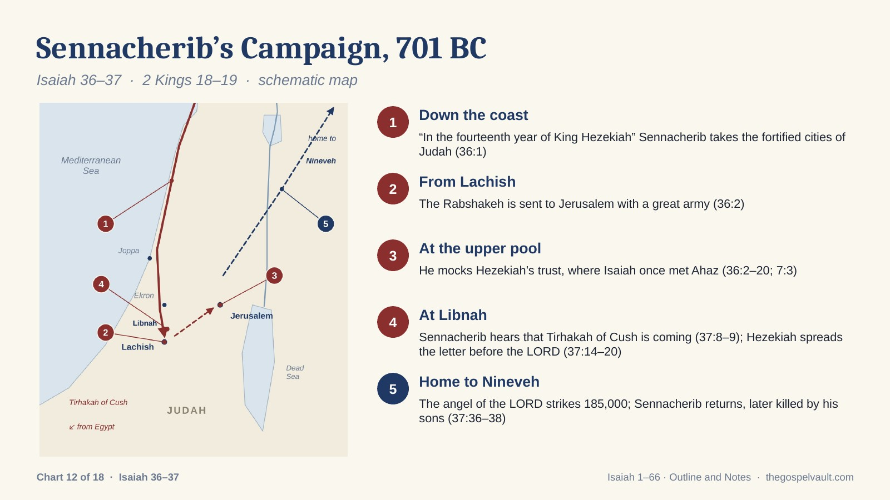
Sennacherib’s Campaign, 701 BC
From the coast to Lachish, Libnah and the upper pool — and home to Nineveh.
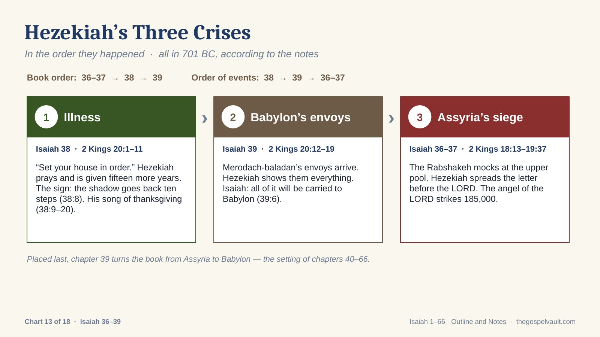
Hezekiah’s Three Crises
Illness, Babylon’s envoys and Assyria’s siege, in the order they happened.
Isaiah 40–48
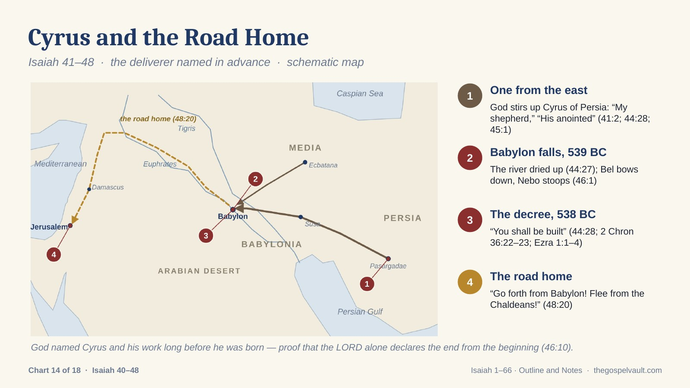
Cyrus and the Road Home
The deliverer named in advance: Persia, the fall of Babylon, the decree and the return.
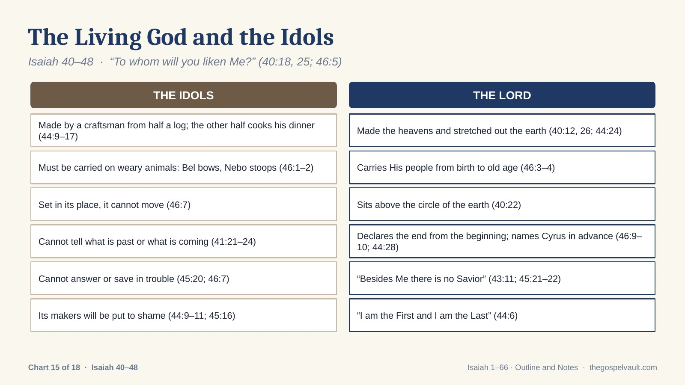
The Living God and the Idols
“To whom will you liken Me?” — the idols and the LORD, side by side.
Isaiah 49–66
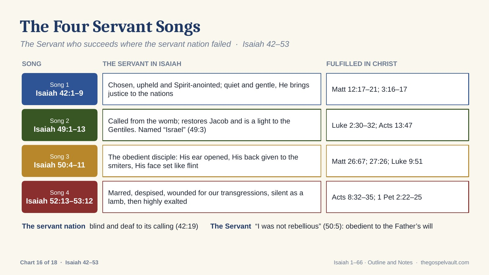
The Four Servant Songs
The Servant who succeeds where the servant nation failed, with the New Testament fulfillments.
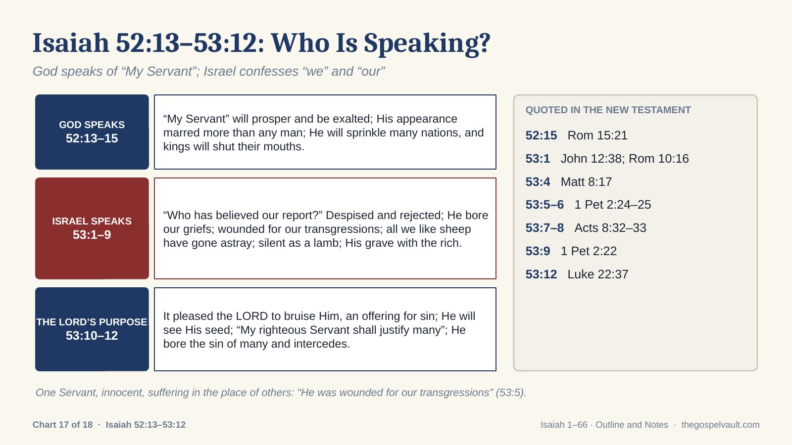
Isaiah 52:13–53:12: Who Is Speaking?
God speaks of “My Servant”; Israel confesses “we” and “our”; the New Testament quotations.
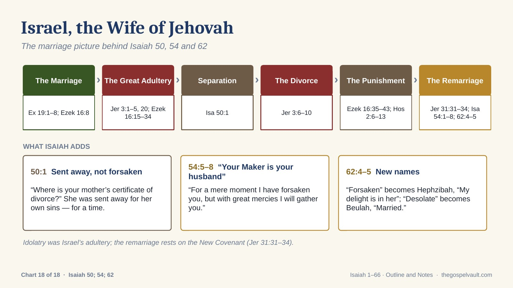
Israel, the Wife of Jehovah
The marriage picture behind Isaiah 50, 54 and 62 — from Sinai to the remarriage.